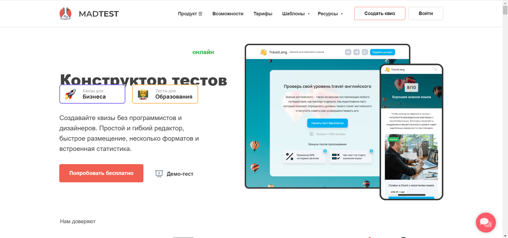

Mastest - это онлайн-конструктор квизов и тестов, который позволяет пользователям создавать интерактивные опросы без необходимости в программировании.

Функциональные возможности
-
Разнообразные типы вопрос: Madtest содержит широкий спектр типов вопросов, который позволяет создавать качественные и интересные тесты
- Угадать вариант: возможность как одиночного, так и множественного ответа c проверкой правильности. За правильный ответ дается +1 балл.
- Угадать изображение: возможность как одиночного, так и множественного выбора изображения c проверкой правильности.
- Угадать слово: вы загадываете слово и вводите все вариации написания, а пользователи должны отгадать вопрос за одну попытку.
- Правильный порядок: разместите варианты ответов в изначальном порядке, а система перемешает их и покажет пользователю в рандомно порядке
- Заполнить пропуски: напишите текст. Слова и фразы, которые нужно вставить, заключите в квадратные скобки. Система перемешает отмеченные слова и предложит пользователю разместить в нужные места
- Вписать пропуски: напишите текст. Слова и фразы, которые нужно вставить, заключите в квадратные скобки. Пользователь должен самостоятельно вписать недостающий текст
- Расставить по колонкам: подготовьте названия колонок и атрибуты для них. Система перемешает все слова, а пользователь должен будет перенести их в подходящие столбцы
- Составить предложение: напишите предложение и сделайте разметку. Система перемешает их, а пользователь должен будет расставить их в правильном порядке для формирования предложения
- Сопоставить слова с картинками: подготовьте пары изображений и слов и внесите их в систему. Система перемешает варианты между собой, а пользователь должен перетащить слова к подходящим по смыслу изображениям
- Платформа Madtest имеет защиту от списывания:
- Установка ограничения по времени прохождения теста
- Ограничения повторных прохождений теста
- Перемешивание вопросов в тесте
- Перемешинание ответов на вопросы
- Количество попыток
- Показ вопросов из списка
- Madtest доступен для всех форматов вопросов. Например, аннотации после ответа, аудио и видео с платформ, выдача сертификатов
- Madtest подводит подробную аналитику по результатам тестирования. Каждый вопрос имеет статистику (процент правильных ответов), просмотр результатов каждого участника, а также возможность экспортировать результаты в разных форматах (например, CSV, Excel).
Достоинства
- Интуитивно понятный интерфейс, поддержка широкого спектра типов вопросов, что позволяет создавать разнообразные тесты.
- Детальная аналитика и автоматизация оценки: возможность подробно анализировать результаты тестирования, что позволяет избежать ошибок и значительно сократить время, которые тратиться на обработку данных.
- Повышение интерактивности тестов: поддержка мультимедийный элементов.
- Экономия времени и усилий: возможность воспользоваться уже готовыми шаблонами для создания тестов, квизов и так далее.
Недостатки
- Зависимость от интернета: для использования платформы необходим доступ в интернет.
- Бесплатная версия с ограниченным функционалом: для полного доступа к платформе необходимо оформить подписку, бесплатная версия действует в течение 7 дней.
Пример использования и инструкция к ним
- Таблица лидеров: устройте настоящее соревнование — выводите таблицу лучших прохождений в конце тестиования
- Сертификаты: выдавайте именные сертификаты в зависимости от набранного результата. Настраиваемый дизайн
- Информационные страницы: размещайте полезный и образовательный контент с помощью уникального конструктора блоков. Размещайте текст, галереи изображений, карточки, аудио и видео-материалы
- Бонусы: увеличивайте интерес пользователей к прохождению за счет бонусов, которые он получит при оставлении контактных данных
- Квиз лендинг: оформите ваш квиз как полноценный промо-сайт — добавьте логотип, слоган, контактные данные и ссылки на соцсети
- Брендирование: добавьте логотип, описание услуги и нужную вам ссылку, которая будет отображаться под всеми опросами — аналог WhiteLabel
Как создать тест в конструкторе тестов и квизов Madtest
Madtest – онлайн платформа, которая обладает широким набором функциональных возможностей и удобным интерфейсом для создания тестов. Однако для получения полного доступа необходимо перейти на платный тариф.